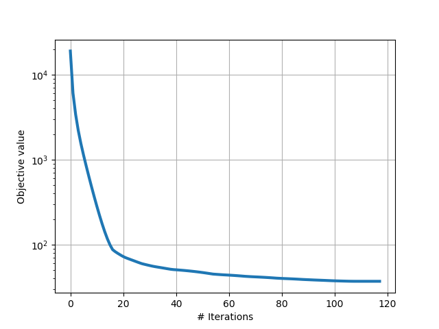

Note
Click here to download the full example code
Combining COPT with JAX¶
This example shows how JAX can be used within COPT to compute the gradients of the objective function. In this example tensorflow-datasets is used to provide the training data.
Out:
/usr/local/google/home/pedregosa/anaconda3/lib/python3.6/site-packages/jax/lib/xla_bridge.py:114: UserWarning: No GPU/TPU found, falling back to CPU.
warnings.warn('No GPU/TPU found, falling back to CPU.')
/usr/local/google/home/pedregosa/anaconda3/lib/python3.6/site-packages/matplotlib/figure.py:448: UserWarning: Matplotlib is currently using agg, which is a non-GUI backend, so cannot show the figure.
% get_backend())
import copt as cp
from jax import grad
from jax import numpy as np
from jax import random
import numpy as onp
import pylab as plt
# .. construct (random) dataset ..
n_samples, n_features = 1000, 200
key = random.PRNGKey(1)
X = random.normal(key, (n_samples, n_features))
key, subkey = random.split(key)
y = random.normal(key, (n_samples,))
def loss(w):
# squared error loss
z = X.dot(w) - y
return np.sum(z * z)
def f_grad(w):
return loss(w), grad(loss)(w)
w0 = onp.zeros(n_features)
l1_ball = cp.utils.L1Ball(n_features / 2.)
cb = cp.utils.Trace(lambda x: loss(x) + l1_ball(x))
cp.minimize_proximal_gradient(
f_grad,
w0,
prox=l1_ball.prox,
callback=cb
)
plt.plot(cb.trace_fx)
plt.xlabel('# Iterations')
plt.ylabel('Objective value')
plt.grid()
plt.show()
Total running time of the script: ( 0 minutes 1.481 seconds)
Estimated memory usage: 70 MB